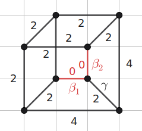

Calabi–Yau Edges (Figure 5.2)
Recall Figure 5.2 from the companion article:

In this section, we provide the code that calculates $H_2(X;\mathbb{Z})$ and $\int_{C_e} c_1(T_X)$ for the GKM graph depicted in Figure 5.2 of the article. First, we construct the GKM graph using the following code.
julia> g = Graph{Undirected}(8);
julia> labels = ["v_$i" for i in 1:8];
julia> M = free_module(ZZ, 2);
julia> (t1, t2) = gens(M);
julia> w = Dict{Edge, AbstractAlgebra.Generic.FreeModuleElem{ZZRingElem}}();
julia> G = gkm_graph(g, labels, M, w);
julia> weights_of_G = [t1, t2, -t1, -t2];
julia> for i in 1:8 # First, add the vertical and horizontal edges.
add_edge!(G, i, i%8 + 1, weights_of_G[(i-1) % 4 + 1]);
end
julia> add_edge!(G, 1, 5, t1+t2); # Second, add the diagonal edges.
julia> add_edge!(G, 2, 6, -t1+t2);
julia> add_edge!(G, 3, 7, -t1-t2);
julia> add_edge!(G, 4, 8, -t1-t2);Having defined G in this way, we can read off the curve classes as follows to obtain Figure 5.2:
julia> print_curve_classes(G)
v_2 -> v_1: (0, 1, 1), Chern number: 4
v_3 -> v_2: (1, 1, 0), Chern number: 4
v_4 -> v_3: (0, 0, 1), Chern number: 2
v_5 -> v_1: (0, 1, 0), Chern number: 2
v_5 -> v_4: (1, 0, 0), Chern number: 2
v_6 -> v_2: (0, 1, 0), Chern number: 2
v_6 -> v_5: (0, -1, 1), Chern number: 0
v_7 -> v_3: (0, 1, 0), Chern number: 2
v_7 -> v_6: (1, -1, 0), Chern number: 0
v_8 -> v_1: (1, 0, 0), Chern number: 2
v_8 -> v_4: (0, 1, 0), Chern number: 2
v_8 -> v_7: (0, 0, 1), Chern number: 2The curve classes $\beta_1$, $\beta_2$, and $\gamma$ from Figure 5.2 thus correspond to $(0, -1, 1)$, $(1, -1, 0)$, and $(0, 1, 0)$, respectively, in the output.